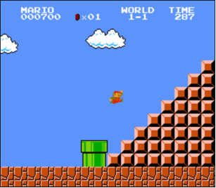

Mario (less)
Começando
Abra o VS Code.
Comece clicando dentro da janela do seu terminal e execute cd sozinho. Você deve encontrar que seu "prompt" se parece
com o abaixo.
$
Clique dentro da janela do terminal e execute
wget https://cdn.cs50.net/2022/fall/psets/1/mario-less.zip
seguido de Enter para baixar um arquivo ZIP chamado mario-less.zip em seu espaço de código. Tenha cuidado para
não ignorar o espaço entre o wget e a URL a seguir, ou
qualquer outro caractere!
Agora execute
unzip mario-less.zip
para criar uma pasta chamada mario-less. Você não
precisa mais do arquivo ZIP, então pode executar
rm mario-less.zip
e responda com "y" seguido por Enter no prompt para remover o arquivo ZIP que você baixou.
Agora digite
cd mario-less
seguido de Enter para mover-se para o diretório (ou seja, abrir) esse diretório. Seu prompt agora deve se parecer com o abaixo.
mario-less/ $
Se tudo ocorreu bem, você deve executar
ls
e ver um arquivo chamado mario.c. Executar code mario.c deve abrir o arquivo onde você digitara o seu
código para este problema. Se não, refaça seus passos e veja se consegue determinar onde errou!
Mundo 1-1
No final do mundo 1-1 do Super Mario Brothers da Nintendo, Mario deve subir uma pirâmide de blocos alinhados à direita, como abaixo.

Vamos recriar essa pirâmide em C, ainda que em texto, usando hashes (#) para os tijolos, como abaixo. Cada hash é um pouco mais
alto do que largo, então a própria pirâmide será mais alta do que larga.
#
##
###
####
#####
######
#######
########
O programa que escreveremos será chamado de mario. E
permitiremos que o usuário decida a altura da pirâmide, solicitando primeiro que ele insira um número inteiro
positivo entre, digamos, 1 e 8, inclusive.
Aqui está como o programa pode funcionar se o usuário inserir 8 quando solicitado:
$ ./mario
Altura: 8
#
##
###
####
#####
######
#######
########
Assim é como o programa pode funcionar se o usuário inserir 4 quando solicitado:
$ ./mario
Altura: 4
#
##
###
####
Assim é como o programa pode funcionar se o usuário inserir 2 quando solicitado:
$ ./mario
Altura: 2
#
##
E aqui está como o programa pode funcionar se o usuário inserir 1 quando solicitado:
$ ./mario
Altura: 1
#
Se o usuário não inserir um número inteiro positivo entre 1 e 8, inclusive, quando solicitado, o programa deve solicitar novamente até que cooperem:
$ ./mario
Altura: -1
Altura: 0
Altura: 42
Altura: 50
Altura: 4
#
##
###
####
Como começar? Abordaremos este problema passo a passo.
Pseudocódigo
Primeiro, execute
cd
para garantir que você esteja no diretório padrão do seu espaço de códigos.
Em seguida, execute
cd mario-less
para mudar para o diretório mario-less.
Em seguida, execute
code pseudocode.txt
para abrir o arquivo chamado pseudocode.txt dentro
desse diretório.
Escreva em pseudocode.txt um pseudocódigo que
implemente este programa, mesmo que não tenha certeza (ainda!) de como escrevê-lo em código. Não há uma maneira
certa de escrever pseudocódigo, mas frases curtas são suficientes. Lembre-se de como escrevemos
pseudocódigo
para encontrar alguém em uma lista telefônica. É provável que seu pseudocódigo use (ou implique o uso!) de
uma ou mais funções, condicionais, expressões booleanas, loops e/ou variáveis.
Spoiler
Existe mais de uma forma de fazer isso, então aqui está apenas uma!
- Solicite a altura do usuário
- Se a altura for menor que 1 ou maior que 8 (ou não for um número inteiro), volte um passo
- Itere de 1 até a altura:
- Na iteração i, imprima i hashtags e depois uma nova linha
Tudo bem editar o seu próprio código depois de ver este pseudocódigo aqui, mas não simplesmente copie/cole o nosso no seu!
Solicitando entrada do usuário
Seja qual for o seu pseudocódigo, vamos primeiro escrever apenas o código C que solicita (e re-solicita, se
necessário) a entrada do usuário. Abra o arquivo chamado mario.c dentro do seu diretório mario. (Lembra como?)
Agora, modifique mario.c de tal forma que ele solicite
a altura da pirâmide ao usuário, armazenando a entrada em uma variável, solicitando novamente a entrada do usuário
quantas vezes for necessário se a entrada não for um número inteiro positivo entre 1 e 8, inclusive. Então,
simplesmente imprima o valor dessa variável, confirmando (para você mesmo) que você realmente armazenou a entrada
do usuário com sucesso, como no exemplo abaixo.
$ ./mario
Altura: -1
Altura: 0
Altura: 42
Altura: 50
Altura: 4
Armazenado: 4
Dicas
- Lembre-se de que você pode compilar seu programa com
make. - Lembre-se de que você pode imprimir um
intcomprintfusando%i. - Lembre-se de que você pode obter um inteiro do usuário com
get_int. - Lembre-se de que
get_inté declarado emcs50.h. - Lembre-se de que solicitamos ao usuário um inteiro positivo na aula usando um loop
do whileemmario.c.
Construindo o oposto
Agora que seu programa está (esperançosamente!) aceitando a entrada conforme prescrito, é hora de dar mais um passo.
Descobriu-se que é um pouco mais fácil construir uma pirâmide alinhada à esquerda do que à direita, como a abaixo.
#
##
###
####
#####
######
#######
########
Então, vamos construir primeiro uma pirâmide alinhada à esquerda e, depois que estiver funcionando, alinhá-la à direita!
Modifique o arquivo mario.c de modo que não imprima
mais simplesmente a entrada do usuário, mas sim imprima uma pirâmide alinhada à esquerda daquela altura.
Dicas
- Lembre-se de que um hash é apenas um caractere como qualquer outro, então você pode
imprimi-lo com o
printf. - Assim como o Scratch tem um bloco
repeat, o C tem um laçofor, através do qual você pode iterar algumas vezes. Talvez em cada iteração, i, você possa imprimir aquele número de hashes? -
Na verdade, é possível "aninhar" laços, iterando com uma variável (por exemplo,
i) no laço "externo" e outra (por exemplo,j) no laço "interno". Por exemplo, aqui está como você pode imprimir um quadrado de altura e larguran, abaixo. Claro, não é um quadrado que você quer imprimir!for (int i = 0; i < n; i++) { for (int j = 0; j < n; j++) { printf("#"); } printf("\n"); }
Alinhando à direita com pontos
Vamos agora alinhar à direita a pirâmide adicionando pontos antes de cada hash, conforme mostrado abaixo.
.......#
......##
.....###
....####
...#####
..######
.#######
########
Modifique o arquivo mario.c de modo que ele faça
exatamente isso!
Dica
Observe como o número de pontos necessários em cada linha é o "oposto" do número de hashes daquela linha. Para uma pirâmide de altura 8, como a acima, a primeira linha possui apenas 1 hash e, portanto, 7 pontos. A última linha, por outro lado, possui 8 hashes e, portanto, 0 pontos. Qual fórmula (ou operação matemática) você poderia usar para imprimir a quantidade correta de pontos?
Como Testar Seu Código
Seu código funciona como prescrito quando você insere:
-1(ou outros números negativos)?0?1a8?9ou outros números positivos?- letras ou palavras?
- nenhuma entrada, quando você apenas pressiona Enter?
Removendo os Pontos
Tudo o que resta agora é um toque final! Modifique mario.c de forma que ele imprima espaços em vez dos pontos!
Como Testar Seu Código
Execute o abaixo para avaliar a correção do seu código usando check50. Mas certifique-se de compilá-lo e testá-lo você
mesmo também!
check50 cs50/problems/2023/x/mario/less
Execute abaixo para avaliar o estilo do seu código usando style50.
style50 mario.c
Dica
Um espaço é apenas uma pressão da tecla de espaço, assim como um ponto é apenas uma pressão de sua tecla!
Apenas lembre-se que o printf requer que você os
envolva com aspas duplas!
Como Enviar
No seu terminal, execute abaixo para enviar seu trabalho.
submit50 cs50/problems/2023/x/mario/less